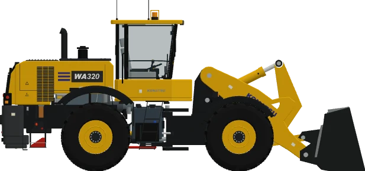
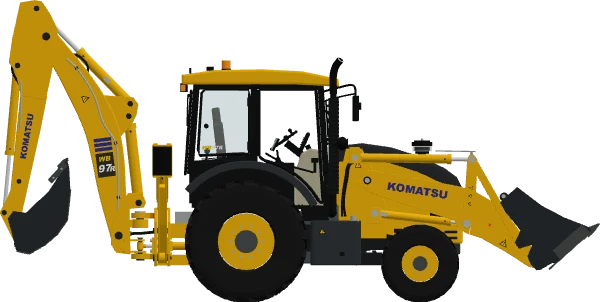
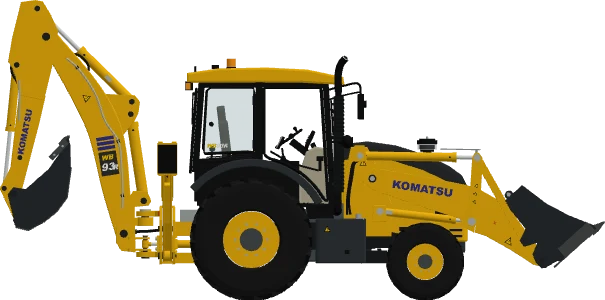
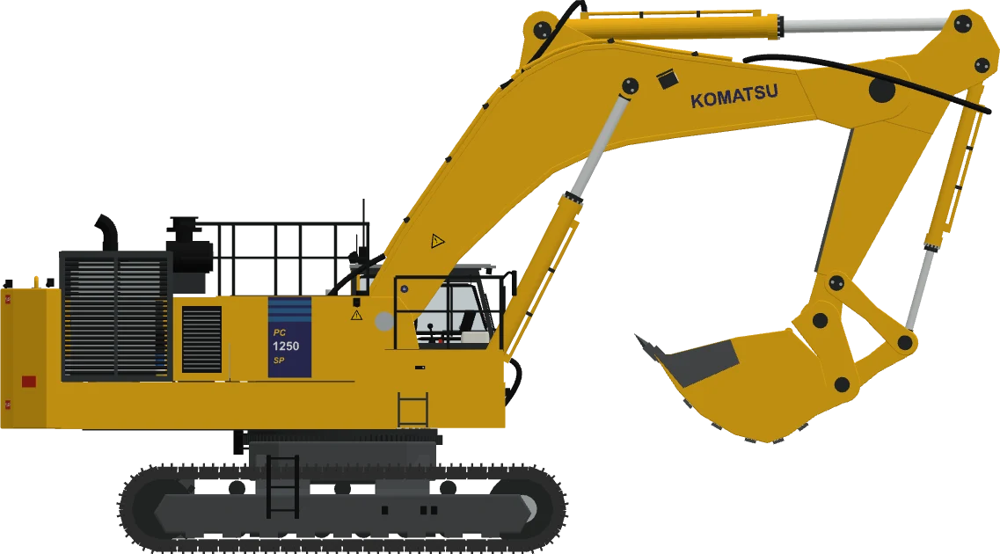
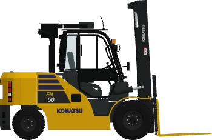

SMARQ Biblioteca
Cinco máquinas para explorar en el navegador y usar como objetos GDL en Archicad 27.




Cinco máquinas para explorar en el navegador y usar como objetos GDL en Archicad 27.




